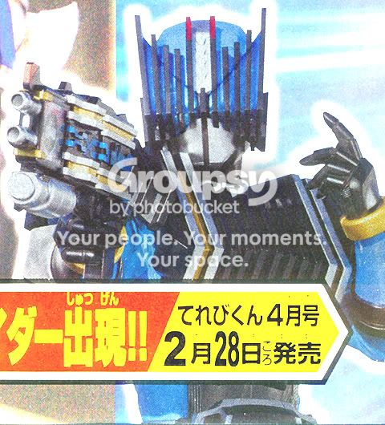

หน้า 38 จากทั้งหมด 182

โพสต์แล้ว:
อังคาร 27 ม.ค. 2009 10:49 pmโดย ECO
Zilenia เขียน:ร้างไง ก็ไม่ค่อยสน เพราะก็ไม่ค่อยได้เข้าเล่น - -
งั้นโนนัดเวลามาเลย เดี๋ยวไอซ์จะแว่บๆไปรับ
(ถ้าไปได้น่ะนะ)
โพสต์แล้ว:
พุธ 28 ม.ค. 2009 2:44 pmโดย ECO

Combination
เป็นสกิลต่อเนื่องหากมีสกิล [Ashibarai]

[Summersalt Kick]

และ [Tackle]

ประเภท :: Active Skill
[ได้ตอน Job Lv.21]
- ที่เลเวล 5 ใช้ Sp 62
- ความแรงรวม 470% ถ้ามีสกิล Martial Art Mastery ความแรงจะเป็น 676%
สกิลนี้หากไม่มีสกิล Ashibarai , Summersalt Kick , Tackle ผลจะเป็นยังไงครับ?
โพสต์แล้ว:
พุธ 28 ม.ค. 2009 5:14 pmโดย ECO
เตะต่อยไม่ออก
จบข่าว
โพสต์แล้ว:
พุธ 28 ม.ค. 2009 6:24 pmโดย ECO
Astralitas เขียน:Combination
เป็นสกิลต่อเนื่องหากมีสกิล [Ashibarai]
[Summersalt Kick]
และ [Tackle]
ประเภท :: Active Skill
[ได้ตอน Job Lv.21]
- ที่เลเวล 5 ใช้ Sp 62
- ความแรงรวม 470% ถ้ามีสกิล Martial Art Mastery ความแรงจะเป็น 676%
สกิลนี้หากไม่มีสกิล Ashibarai , Summersalt Kick , Tackle ผลจะเป็นยังไงครับ?
ไม่ มี ส กิ ล ไ ห น ก็ ไ ม่ ใ ช้ ส กิ ล นั้ น
สมมุติอัพแค่ Ashibarai , Summersalt Kick มันก็จะใช้แค่ 2สกิล
โพสต์แล้ว:
พุธ 28 ม.ค. 2009 6:35 pmโดย ECO
สรุปพิษตูไม่มีใครมีข้อมูล อืมๆๆ
โพสต์แล้ว:
พุธ 28 ม.ค. 2009 6:39 pmโดย ECO
ถามใหม่ได้มะ ไม่ได้มาดูนาน ไม่รู้ถามไว้หน้าไหน
โพสต์แล้ว:
พุธ 28 ม.ค. 2009 7:00 pmโดย ECO
ไว้วันศุกร์จะมาคุมกระทู้นะ

โพสต์แล้ว:
พุธ 28 ม.ค. 2009 7:10 pmโดย ECO
ถามว่าพิษที่ออกมาจากสกิล เคลือบพิษเป็นพิษแบบไหน
ลดเลือดฮวบๆๆแต่รักษาได้
ลดเลือดน้อยแต่ลด Atkและรักษาไม่ได้
Rider Crysis

โพสต์แล้ว:
พุธ 28 ม.ค. 2009 7:24 pmโดย ECO
เคยเห็นอยู่นะ น่าจะเป็นแบบที่ฮิลและหายมากกว่า
ถ้าเป็นแบบฮิลไม่หายคงมีคนใช้ตรึม ^^
โพสต์แล้ว:
พุธ 28 ม.ค. 2009 8:23 pmโดย ECO
กลับมาแล้ว(เว้ย)
เจอออโต้รันทำพิษ(เพื่อนยืมทรัมไดรฟ์ไปทำงานแล้วเอาไวรัสมาเป็นคำขอบคุณ....เจริญ)
หลังจากฟอแมต(แล้วลืมแบคอัพทุกอย่าง 555)
เน็ตเน่า (555)
หาแอนตี้ไวรัสใช้ไม่ได้ (55...)
แผ่นวินโดวส์อันที่เคยใช้เจ๊ง (5.....)
แผ่นใหม่กวนประสาท (....)
ผมกลับมาแว้วT^T
โพสต์แล้ว:
พุธ 28 ม.ค. 2009 9:44 pmโดย ECO
/me เอาเลื่อยปาดไป ปาดมา เตะซ้าย เตะขวา ถีบ2ที กระทืบๆๆๆๆๆๆๆๆ เอาดาบสับๆๆๆ ให้เป็นชิ้นๆ ละกระทืบต่อๆๆๆๆ
หายไปตั้งนาน! ไม่มีใครให้แกล้ง

โพสต์แล้ว:
พฤหัสฯ. 29 ม.ค. 2009 6:48 amโดย ECO
โรคจิตนะเนี่ย
โพสต์แล้ว:
ศุกร์ 30 ม.ค. 2009 10:19 pmโดย ECO
ซอสฝากมาบอกว่า...
คอมไวรัสกิน ออนได้แต่M มีอะไรติดต่อมาทางMเน่อ
มาร่วมไว้อาลัยให้คอมซอสกันเถอะ

โพสต์แล้ว:
ศุกร์ 30 ม.ค. 2009 10:48 pmโดย ECO
บอไอ้ซอสมันไปว่า ลองหยิบค้อนฟาทาลิสมาทุบคอมพ์เล่นดูสิ
โพสต์แล้ว:
เสาร์ 31 ม.ค. 2009 1:19 amโดย ECO
ฉาบพิษของแอสใช้กับกระโห้ขาวไม่ได้
ปล.ถ้าได้ก็โกงเกินแหละ พิษลดHpเป็น%